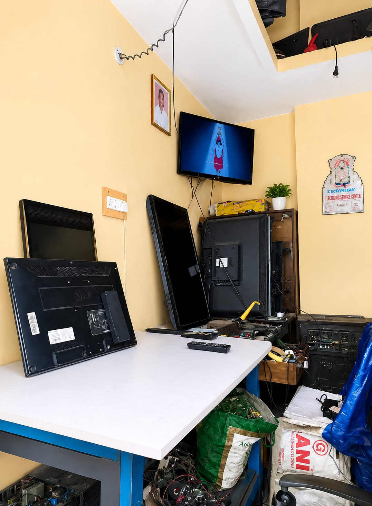

Professional TV Repair & Maintenance
LED, LCD, OLED & Smart TV Repairs
Book ServiceOur technician visits your home for inspection and repair.
Quick diagnosis and repair of LED TVs.
Software and hardware troubleshooting.
Software and hardware troubleshooting.
Professional screen replacement service.
Fast and reliable repair support.
Quality replacement parts for all major TV brands.
Century Electronics TV Service Center is a trusted TV repair and maintenance service provider. We specialize in repairing LED, LCD, OLED and Smart TVs of all major brands.
We provide fast and reliable doorstep service, allowing customers to get their TVs repaired without leaving their homes.
